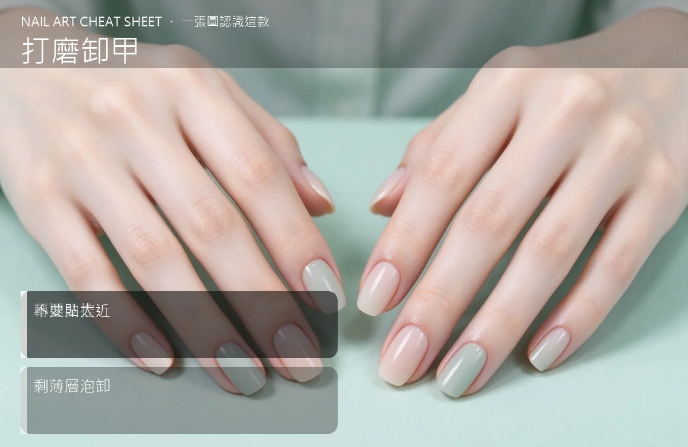

美甲打磨卸甲是什麼？進階入門攻略
電磨機卸甲快 3 倍，但轉速、角度、停留時間沒抓好，一下就磨到真甲冒紅。
打磨卸甲原理與辨識重點：美甲師不說的轉速要控
打磨卸甲是用電動打磨機（磨頭旋轉）把舊凝膠或水晶直接磨掉，比傳統泡卸快很多，歐美沙龍幾乎都這樣做。原理是用不同粗細的磨頭，先把厚膠磨薄、再把剩餘殘層磨到接近真甲，最後留一層薄的再泡卸或輕推。重點不是「磨越快越好」，而是「知道什麼時候該停」。
誰適合做打磨卸甲？電動打磨對號入座
沙龍美甲師、做延甲或水晶的人最常用；一般客人自己在家不建議，因為磨頭轉速快、控制不好容易磨到肉。
打磨卸甲美甲施作步驟：電動打磨機
先選對磨頭（粗砂磨厚膠、細砂收邊）→ 轉速調到中低速（約 15,000–20,000 rpm）→ 磨頭斜貼甲面、順一個方向走 → 看到真甲顏色露出就停 → 剩薄層改用木棒輕推或短泡卸 → 最後指緣油收尾。
打磨卸甲優缺點分析：美甲持久度與傷甲評估
| 優點 | 說明 |
|---|---|
| 速度快、不會把手指泡得脫皮，厚凝膠或水晶也能幾分鐘處理完。 | 是歐美流派的招牌，進階就能上手 |
| 缺點 | 說明 |
| 機器聲音大、粉塵多（一定要開粉塵機），技術門檻高，新手磨到見紅很常見。 | 前置與最怕「貼太用力」和「同一處停留太久」。磨頭只要壓下去超過 2 秒，真甲立刻被削薄、甚至燙傷冒紅。手要飄、要快，看到真甲反光就馬上移開。沒顧好會打折 |

打磨卸甲新手雷區：不要貼太近與常見錯誤
注意：最怕「貼太用力」和「同一處停留太久」。磨頭只要壓下去超過 2 秒，真甲立刻被削薄、甚至燙傷冒紅。手要飄、要快，看到真甲反光就馬上移開。
打磨卸甲和其他美甲做法的差別比較
打磨卸甲跟「前置磨甲」是兩件事：前置磨是為了讓凝膠黏得住，只輕磨表面；打磨卸甲是把整層舊膠磨掉。別把卸甲用的粗磨頭拿來磨真甲，也別用前置細磨頭去磨厚水晶。
打磨卸甲美甲常見問題 FAQ
Q：電磨機自己在家可以用嗎？ A：不建議。磨頭轉速動輒上萬 rpm，壓力、角度沒控制好一下就削到真甲。要在家做還是走泡卸流程。
Q：打磨完指甲是不是會變薄？ A：技術好不會。變薄通常是因為磨頭壓太久、或把真甲一起磨掉。卸完擦指緣油、隔一週再做新美甲，甲面會自己長回來。
Q：磨頭要多久換一次？ A：看使用量。粗砂磨頭磨 20–30 位客人就鈍了，鈍了切削力變差、你會壓更大，反而更傷甲，該換就換。